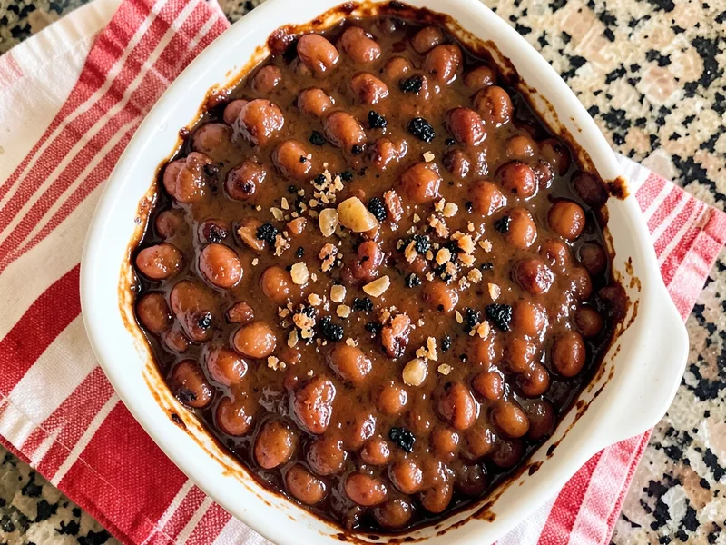

A sweet and smoky baked bean casserole with a rich, caramelized glaze that's the perfect crowd-pleasing side dish for any cookout or family gathering.
Estimated from USDA data and product nutrition labels (Campbell's Pork and Beans, generic BBQ sauce, brown sugar). Values are per serving based on 8 servings. · Per serving (based on 8 servings)
Moisture evaporates during the uncovered bake phase, reducing total weight by approximately 12–15% as the sauce thickens and caramelizes.
By Colleen Swenson
← All Recipes